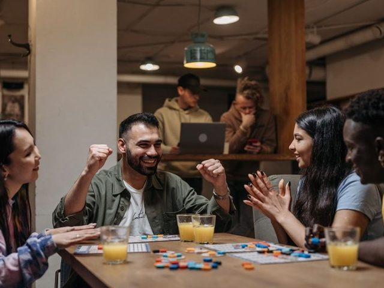
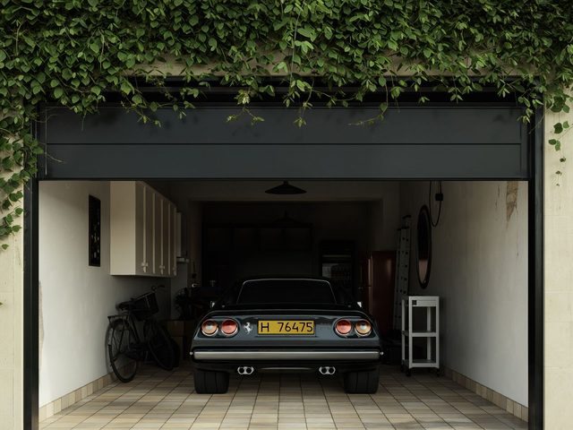
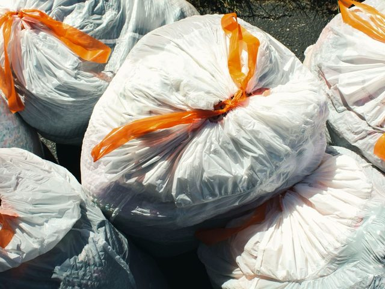
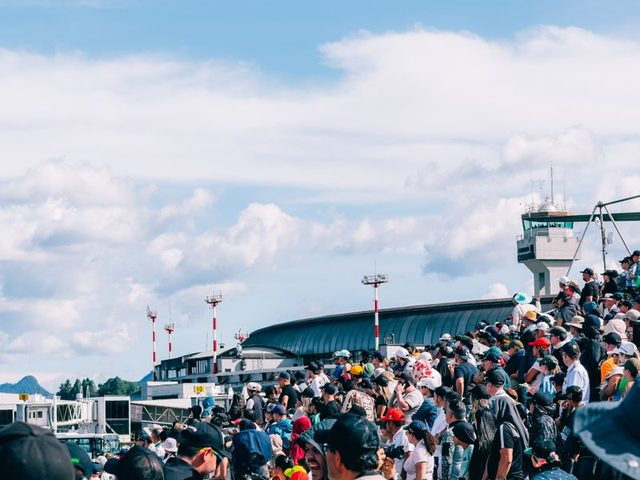
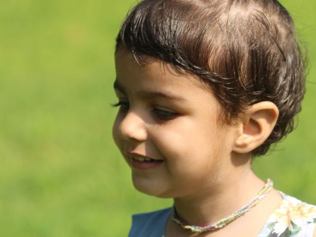
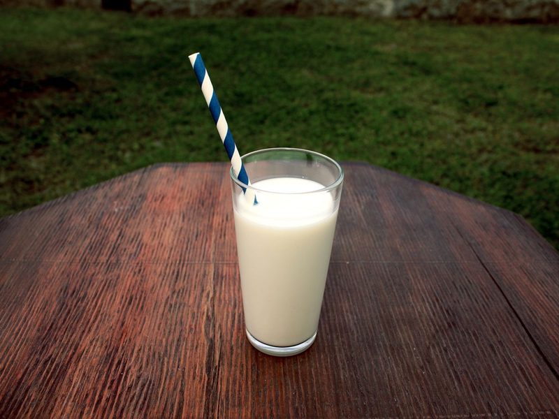
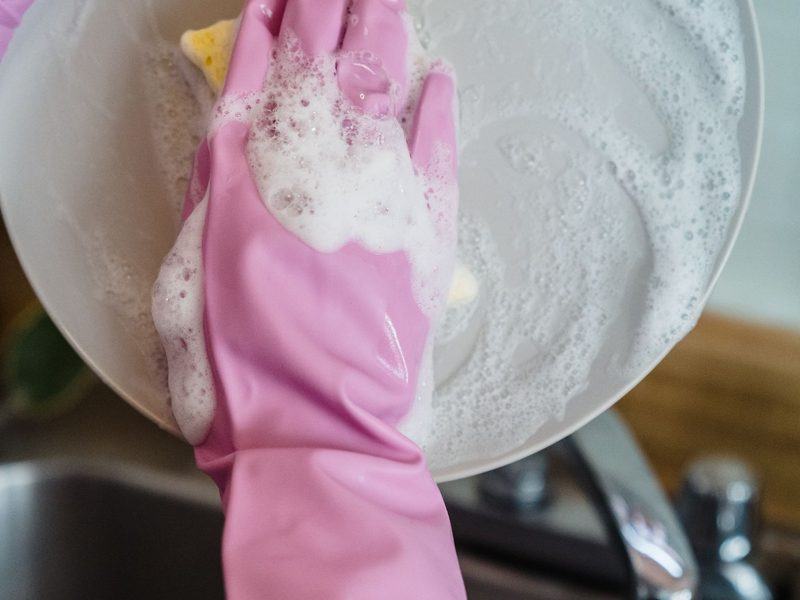
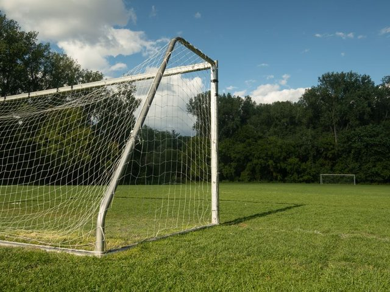

UNIT 21 · VOCABULARY
G 開頭（一）
G-I
34 個單字聽・唸・用
本單元單字一覽
WORD UP「G-I」的 34 個字（gain 到 gold）。紅色＝要複習，藍色標籤＝WORD UP 標熟記、還要在這裡考對。
gaingamegaragegarbagegardengasgasolinegategathergeneralgenerationgenerousgeniusgentlegentlemangeographyGermanGermanygesturegetghostgiantgiftgirlgivegladglassglovegluegogoalgoatGodgold
每個字都有 🔊，先聽發音、跟著唸，再看例句。
單字 1–4
📈
gain
獲得；增加v./n.
He gained a lot of experience from the job.
他從工作中得到很多經驗。
他從工作中得到很多經驗。

game
遊戲；比賽n.
Let's play a game.
我們來玩個遊戲吧。
我們來玩個遊戲吧。

garage
車庫n.
Dad parks the car in the garage.
爸爸把車停在車庫。
爸爸把車停在車庫。

garbage
垃圾n.
It's my job to take out the garbage.
倒垃圾是我的工作。
倒垃圾是我的工作。
單字 5–8
garden
花園n.
Grandma grows roses in her garden.
奶奶在花園種玫瑰。
奶奶在花園種玫瑰。
gas
氣體；瓦斯；汽油n.
We stopped at a gas station.
我們在加油站停下來。
我們在加油站停下來。
gasoline
汽油n.
The price of gasoline went up.
油價漲了。
油價漲了。
gate
大門；登機門n.
Meet me at the school gate.
在校門口跟我碰面。
在校門口跟我碰面。
單字 9–12

gather
聚集；收集v.
The family gathered for dinner.
全家人聚在一起吃晚餐。
全家人聚在一起吃晚餐。
🎖️
general
一般的；將軍adj./n.
In general, I go to bed at ten.
一般來說，我十點睡覺。
一般來說，我十點睡覺。
👴
generation
世代；一代n.
Three generations live in this house.
這棟房子住了三代人。
這棟房子住了三代人。

generous
慷慨的；大方的adj.
It's very generous of you to help.
你真慷慨，願意幫忙。
你真慷慨，願意幫忙。
單字 13–16
genius
天才n.
Einstein was a genius.
愛因斯坦是天才。
愛因斯坦是天才。

gentle
溫柔的；輕柔的adj.
Be gentle with the baby.
對寶寶要溫柔。
對寶寶要溫柔。
gentleman
紳士；先生n.
Ladies and gentlemen, welcome!
各位先生女士，歡迎！
各位先生女士，歡迎！

geography
地理n.
We learn about maps in geography class.
我們在地理課學地圖。
我們在地理課學地圖。
單字 17–20
🥨
German
德國的；德國人；德文adj./n.
My friend is learning German.
我朋友在學德文。
我朋友在學德文。
Germany
德國n.
Berlin is the capital of Germany.
柏林是德國的首都。
柏林是德國的首都。
gesture
手勢；姿態n.
He made a friendly gesture.
他做了一個友善的手勢。
他做了一個友善的手勢。
get
得到；變得；到達v.
It's getting dark.
天色漸漸變暗。
天色漸漸變暗。
單字 21–24
ghost
鬼n.
Do you believe in ghosts?
你相信有鬼嗎？
你相信有鬼嗎？
giant
巨人；巨大的n./adj.
There is a giant panda at the zoo.
動物園裡有一隻大貓熊。
動物園裡有一隻大貓熊。

gift
禮物；天賦n.
This gift is for you.
這份禮物是給你的。
這份禮物是給你的。

girl
女孩n.
The girl in red is my sister.
穿紅衣服的女孩是我妹妹。
穿紅衣服的女孩是我妹妹。
單字 25–28
give
給v.
Never give up!
永不放棄！
永不放棄！
😄
glad
高興的adj.
I'm glad to see you.
很高興見到你。
很高興見到你。

glass
玻璃；玻璃杯n.
Can I have a glass of water?
可以給我一杯水嗎？
可以給我一杯水嗎？

glove
手套n.
Wear your gloves. It's cold.
戴上手套，天氣很冷。
戴上手套，天氣很冷。
單字 29–32

glue
膠水；黏n./v.
Use glue to stick the paper on the card.
用膠水把紙黏在卡片上。
用膠水把紙黏在卡片上。
🚶
go
去v.
Let's go to the movies.
我們去看電影吧。
我們去看電影吧。

goal
目標；（球賽）得分n.
My goal is to pass the GEPT.
我的目標是通過全民英檢。
我的目標是通過全民英檢。

goat
山羊n.
The goat is eating grass.
山羊在吃草。
山羊在吃草。
單字 33–34
🙏
God
上帝；神n.
Oh my God! I forgot my homework!
天啊！我忘了帶作業！
天啊！我忘了帶作業！

gold
金子；金的n./adj.
She won a gold medal.
她贏得一面金牌。
她贏得一面金牌。
重點整理
| 說法 | 中文 | 例子 |
|---|---|---|
| give up / give up + V-ing | 放棄 | Don't give up studying. |
| in general | 一般來說 | In general, kids like candy. |
| get + 形容詞 | 變得… | get tired ／ get angry |
| be glad to V | 很高興做… | I'm glad to help. |
| take out the garbage | 倒垃圾 | take out the garbage every night |
| glass / glasses | 玻璃杯 ／ 眼鏡 | a glass of milk ／ wear glasses |
| German / Germany | 德國的、德文 ／ 德國 | speak German ／ live in Germany |
go 的過去式 went、過去分詞 gone；give 的過去式 gave、過去分詞 given。
快問快答：中文 → 英文
1獲得；增加gain
2車庫garage
3花園garden
4汽油gasoline
5聚集；收集gather
6世代；一代generation
7天才genius
8紳士；先生gentleman
快問快答：英文 → 中文
1German德國的；德國人；德文
2gesture手勢；姿態
3ghost鬼
4gift禮物；天賦
5give給
6glass玻璃；玻璃杯
7glue膠水；黏
8goal目標；（球賽）得分
學完了！接下來
複習方法
review
- 回到「📗 單字卡」，按「遮中文」自己考自己
- 再按「遮英文」，看中文說出英文
- 每個例句跟著 🔊 唸一次
準備好了
- 按右上角「📝 前往測驗」
- 測驗錯的題目要訂正到全對
- 訂正完成補送 1 點